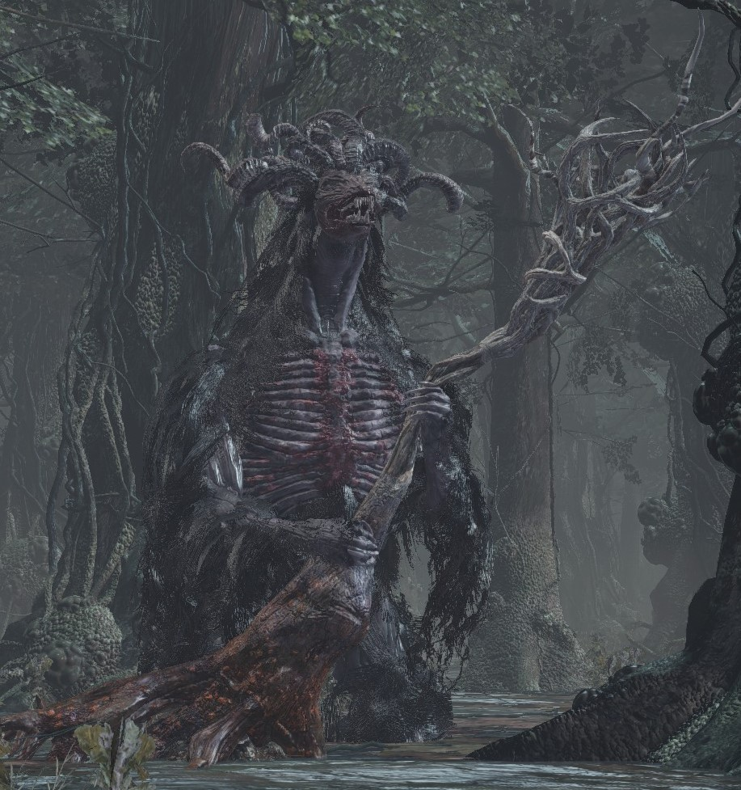
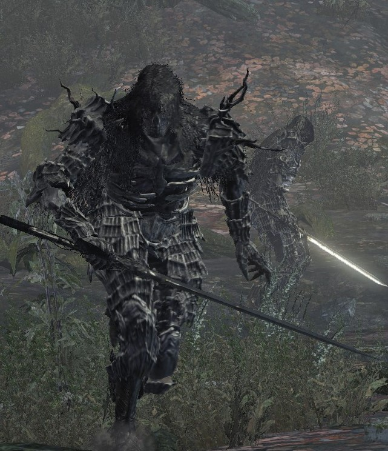
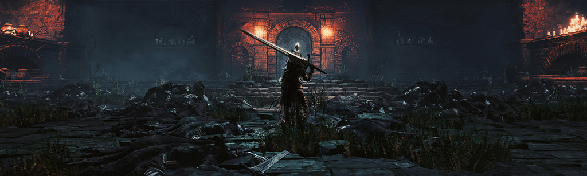

-Back To Index-
-Firelink Shrine-
-HW Of Lothric-
-Undead Settlement-
-Back To Index-
-Firelink Shrine-
-HW Of Lothric-
-Undead Settlement-
Farron Keep
.Home of the Undead Legion.
This is the Swamp of Farron. Home to the Undead Legion of Farron (The Abyss Watchers). This Legion’s sole purpose is to fight off The Abyss. Farron Swamp derives from a specific location found in Dark Souls 1. Theorists predict that the Oolacile (the DS1 location) had devolved into Farron Swamp over the course of about 2,000 years. We know that The Abyss started taking over the land with no exception of the swamp. Creatures that once inhabited the land were also taken and transformed by The Abyss. The Ghru’s were once tribal warriors that took refuge in the swamp once they became lost. The Elder Ghru (on good authority) seem to be a much more evolved version of these tribal creatures found throughout Farron Swamp. A more rare and much more dangerous enemy found in the swamp are The Darkwraiths. The Darkwrwaiths seem to be servants of the Abyss, and were set out to destroy life as the Abyss does. After this land became swallowed by The Abyss, and The Abyss Watchers returned home from their slumber, they tried fighting off the Abyss that covered their land. After some of the Abyss Watchers held the power of the flame, other individuals of the legion did not have the same strength to keep the Abyss at bay. After losing their fellow brothers of the Legion to the Abyss, The Legion forsake their duty to fight off the Abyss and their duty to re-link the flame.
-Enemies Of The Keep-
Ghru
Believe it or not but these creatures were once human. How they became this way, whether it was corruption by the Abyss, or mutation by some kind of outside disturbance is not clear. Many years before their de-evolution, they served as acolytes or followers of the Legion of Farron and the Abyss Watchers.
Elder Ghru
Something clearly went wrong over the many years in the swamp, with no exception to these creatures. There are few Elder Ghru that lurk about the deeper parts of the swamp. Because of their massive size and mobility, they have no issues getting around. There is only one way to speculate how the Elder Ghru came to be. There were a few of these acolytes that were maybe more susceptible to the sickness and became an even more evolved and dangerous version of the Ghru.
DarkWraith
The DarkWraiths are without a doubt products of the Abyss. They were not pre-existing creatures influenced by the Abyss like everything else. The history behind them date back thousands of years to the beginning of the dark age where they literally invaded New Londo (the lower city of Anor Londo) where most of the humans lived where they destroyed and slaughtered. Now, they lurk around Farron Keep attempting to kill everything in sight.
The Abyss Watchers
The undead Legion of the Abyss were once a great pact bound by blood. Long ago they fought endlessly to keep the Abyss at bay, until they noticed they were fighting a losing battle. Two of the legion members went in the dark to sacrifice themselves to rekindle the flame to keep the world from inevitable falling into the dark age, making them Lords of Cinder. Some of the Legion who got left behind got taken by the Abyss, making them a different kind of undead. Those who did, fought and killed the rest of the legion. After Prince Lothric, the heir to the flame denied his responsibility to rekindle the flame, the Abyss Watchers along with the rest of the previous Lords of Cinder were arissen to try to rekindle the flame and save the world. Instead of this happening, they all returned to their homes where the now corrupted Abyss Watchers would go and fight the legion members influenced by the Abyss. When the main character and protagonist of the game goes to fight the Abyss Watchers to gain their souls, you find yourself fighting both the Lords of Cinder, and the Abyss plagued legion members.
{kind=link}
{kind=link}
{kind=link}
{kind=link}
{kind=link}